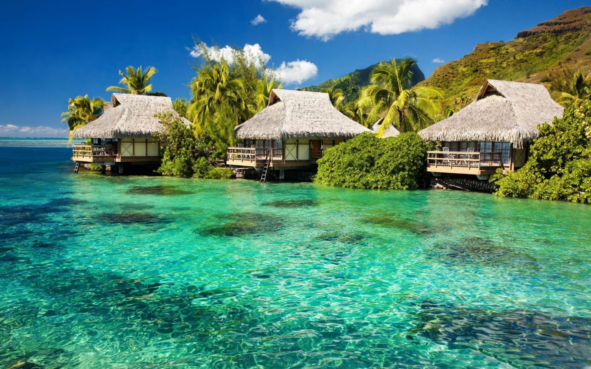

Fatos sobre o Stomatopoda

Descrição
O camarão-louva-a-deus-palhaço (Odontodactylus scyllarus), também conhecido como lagosta-boxeadora é uma espécie de tamarutaca nativa do Indo-Pacífico, de Guam até a África Oriental. Em aquários de água salgada, é uma atração tanto pela coloração quanto pelo perigo.
Visão

Esses animais possuem o mais complexo sistema de visão de cores do mundo animal, pois enxergam 12 cores primárias, correspondentes aos 12 pigmentos distintos presentes em sua retina.
Distribuição
O camarão mantis vive em águas tropicais e subtropicais em todo o mundo. A maioria das espécies vive nos oceanos indiano e pacífico. Algumas espécies vivem em ambientes marinhos temperados. Estomatopodes constroem suas tocas em águas rasas, incluindo recifes, canais e pântanos.
Soco Potente

De acordo com o site Science Alert, este crustáceo da ordem Stomatopoda, chamado de tamarutaca ou de lacraia-do-mar, mede apenas cerca de 10 centímetros de comprimento, mas isso não o impede de ser o detentor do soco mais potente do reino animal (estamos a falar de 23 metros por segundo, o que cria 1500 newtons de força por soco).